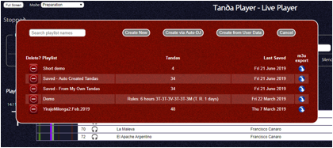

Only playlists that are fixed in terms of their content can be exported - Playlists saved as "rules" which are evaluated when opened cannot be exported.
To export a playlist, put the live player app into preparation mode and open the "choose playlist" window. On the right hand side of each row is a button to download that playlist – “m3u export”.

All playlists are downloaded under the name "tandaPlayer.m3u" and will be saved to wherever your browser is configured for saving files.
The filenames in the exported playlist are relative to the top level of the USB so they will start "music" or "cortinas". Saving the playlist to a folder that has these two folders below it allows the playlist to be played in applications such as Window's Media Player or iTunes.
Note that in iTunes, if a cortina is repeated in the playlist, iTunes will not add it twice when you import the playlist resulting in cortinas going missing.
As an example of use, you could create a playlist ready for an event to start from - you can always then edit this on the night as required. Once the playlist has been created, export as a m3u playlist file to your laptop. Create a clone of your main USB drive if you do not already have a backup. Then copy the m3u file to the top level of the USB clone. This playlist can now be played on your laptop in the event of some failure with your main USB device or with the Tanda Player by using iTunes or similar player.
Note that when playing the m3u playlist in a regular media player, Cortinas in the playlist will not auto-fade and there will be no added silence between songs and sound levels may vary from song to song.